Старание есть, отдачи мало
Когда усилий много, а визуальный результат слабый, нужно искать не «ещё мотивацию», а слабое звено в общей связке.
Я — Павел Марков. Здесь вы можете оценить состав тела, рассчитать питание и увидеть динамику. Для личной работы соберём тренировки и режим под ваш график.
Я смотрю на картину целиком: нагрузку, питание, сон, стресс, ограничения и поведение. Так быстрее видно, где теряется форма и какой шаг даст первый ощутимый сдвиг.
Когда усилий много, а визуальный результат слабый, нужно искать не «ещё мотивацию», а слабое звено в общей связке.
Работа, дорога, усталость, поездки и сон меняют условия. План должен выдерживать это, а не требовать идеальной жизни.
Со стороны быстрее видно, где вы переусложняете, где недокручиваете и какой рычаг даст первый понятный результат.
Не всё важно одновременно. Я помогаю отделить действия, которые двигают форму, от того, что только забирает ресурс.
Я не продаю универсальный шаблон. Работа держится на вводных человека, наблюдении, цифрах, обратной связи и корректировках — поэтому движение становится не вспышкой мотивации, а управляемым процессом.
Я собрал кейсы не отдельным рекламным блоком, а как продолжение услуг: человек сразу видит, с каким запросом приходит, что разбирается внутри и какой практический выход получает.
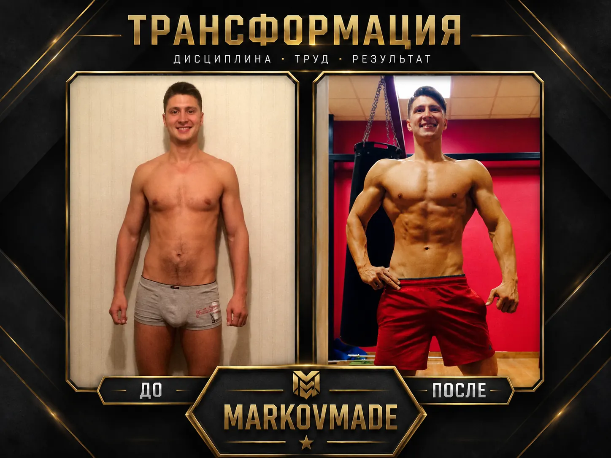
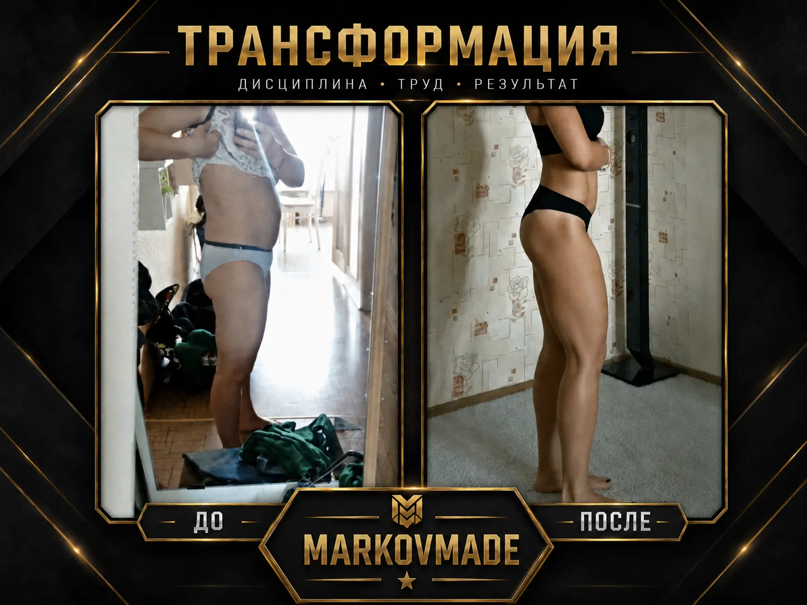
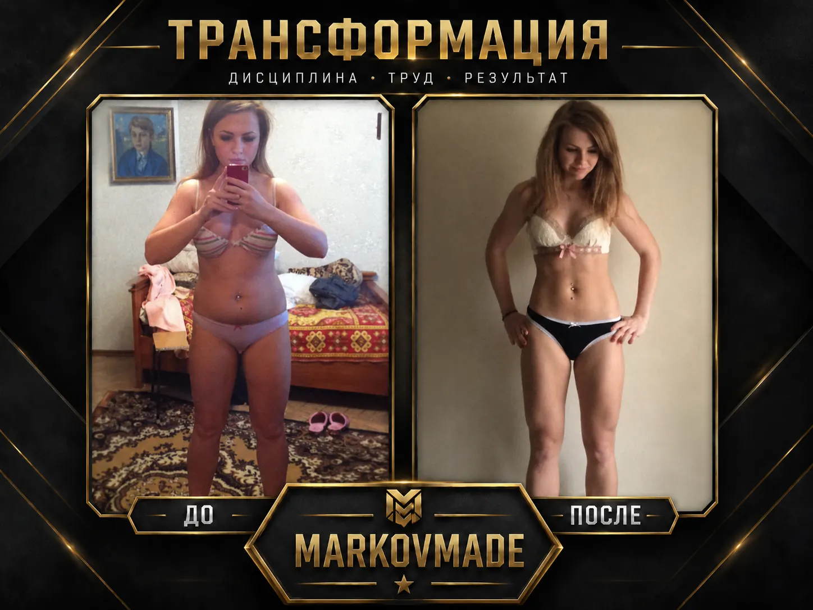
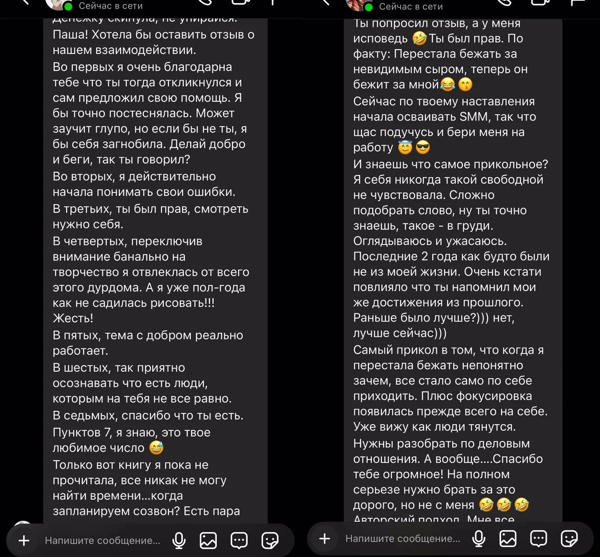
Каждый кейс начинается не с шаблона, а с вашей ситуации. Поэтому первый шаг — оставить вводные и понять, какой формат даст самый быстрый понятный сдвиг.
Разобрать мой запросОцените состав тела, рассчитайте питание и тренировочные веса, запишите ежедневные показатели. LAB хранит данные в вашем браузере и помогает следить за изменениями.
Инструменты загружаются при открытии раздела.
FFMI, КБЖУ, восстановление и динамика полезны только тогда, когда из них понятно, что менять первым: питание, нагрузку, режим, темп или формат работы. Я перевожу показатели в решение, которое можно выполнять.
MARKOVMADE / PERSONAL OS
Прототип соединяет питание, тренировки, восстановление и прогресс. Каждый экран помогает понять текущую динамику и выбрать что делать дальше.
Не реагирует на случайный вес или один плохой день.
Данные превращаются в конкретный следующий шаг, а не в информационный шум.
Тело, питание, нагрузка и восстановление работают как одна система.
Прототип загружается при открытии раздела.
За годы в большом спорте, глубокой теоретической и практической базой я прошел через всё: от жестких падений до триумфов. Сегодня я передаю этот опыт вам не просто через упражнения, а через систему трансформации, которая меняет тело, мышление и качество жизни.
Фиксируем исходные данные, согласуем план и сроки проверки. Отслеживаем динамику и корректируем питание, тренировки и режим по вашим данным. Результат зависит от исходной ситуации, соблюдения плана и индивидуальной реакции; конкретные изменения и сроки не гарантируются.
Первый контакт нужен для ясности: увидеть текущую картину, отделить главное от второстепенного и собрать действия, которые реально помещаются в ваш день.

Я ломаю стереотип о том, что обстоятельства сильнее человека. Моя трансформация — это 16 лет пути: от большой футбольной мечты в 13 до оглушительного кризиса. Цифры на счетах превратились в нули, а активы — в пыль. Мое перерождение началось в Китае. Не с триумфа, а с признания: «Я больше не тот, кем был».
Я знаю вкус предательства и тяжелую тишину депрессии — когда боишься проверить телефон, но еще больше боишься, что он так и будет молчать неделями. Пройдя через это, я научился видеть фундамент, а не обложку.
Сегодня MARKOVMADE — это не про картинки. Это про смыслы. Я беру ваш опыт — со всеми ошибками и провалами — и превращаю его в твердую опору. В то, что невозможно отобрать или разрушить.
Выжигать иллюзии, чтобы на их месте строить смыслы
Дать твердую почву тем, кому тесно в рамках обыденности
За каждым расчётом здесь стоит не шаблон, а путь, где спорт, кризисы, дисциплина, тело и характер пришлось собирать заново. Это не биография ради биографии — это фундамент метода MARKOVMADE: система, которая работает не в идеальных условиях, а в реальной жизни человека.
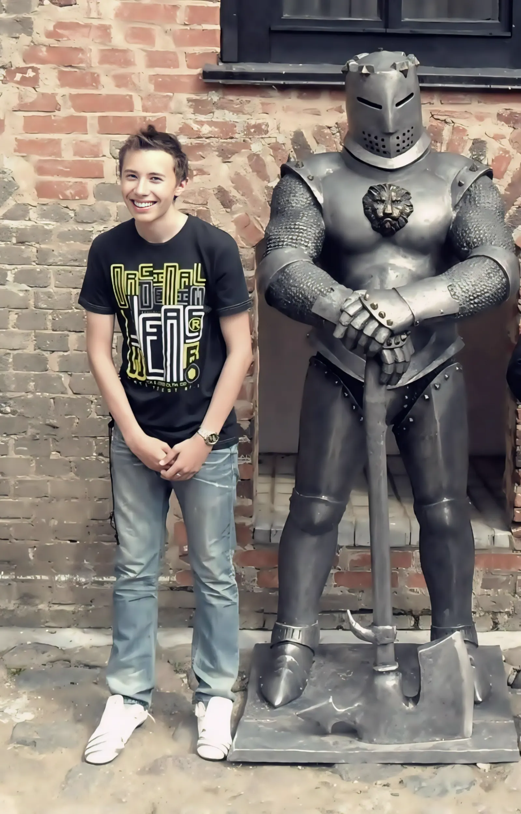
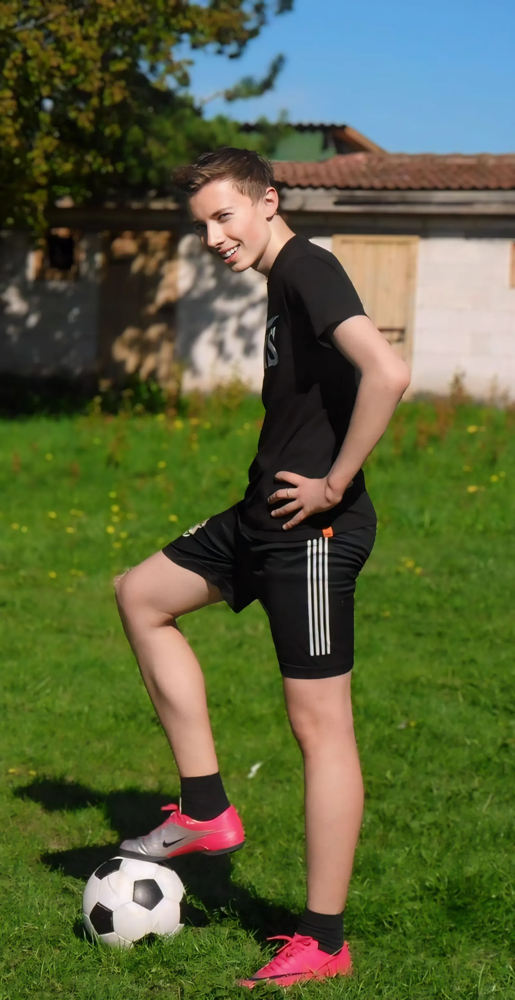
Путь начался не с поддержки, а с вызова. В 13 — первый бизнес на дропшиппинге и создание ЗОЖ-движения в поселке. В 14 — профессиональный футбол и вызов в сборную, который обернулся жестким уроком: травля, коррупция и травма закрыли двери в большой спорт. Но именно это «непризнание» сверстниками заставило уйти в глубокое саморазвитие. Зал стал храмом, а личный бренд Young Athlete — манифестом силы. Так родилась Markov Made Mafia.
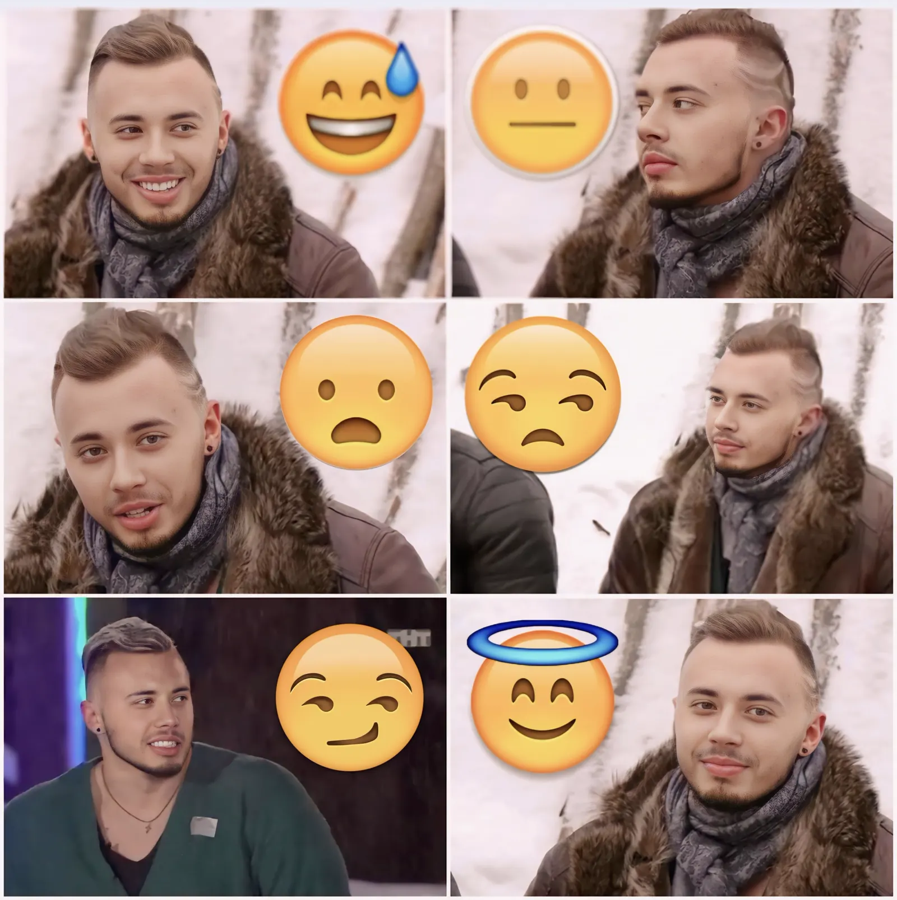
Жажда масштаба. Время проверки амбиций на прочность. Победы в бодибилдинге, переезд в Петербург в 18 лет и работа в крупнейшей сети Sport Life. Исследование жизни во всех проявлениях: от медицины и маркетинга до участия в «Дом-2». Запуск стоматологической клиники и кальянного бизнеса. В 20 лет — пик медийности, накопления в 5.5 млн и ощущение, что мир принадлежит тебе. Но это была лишь подготовка к главному экзамену.
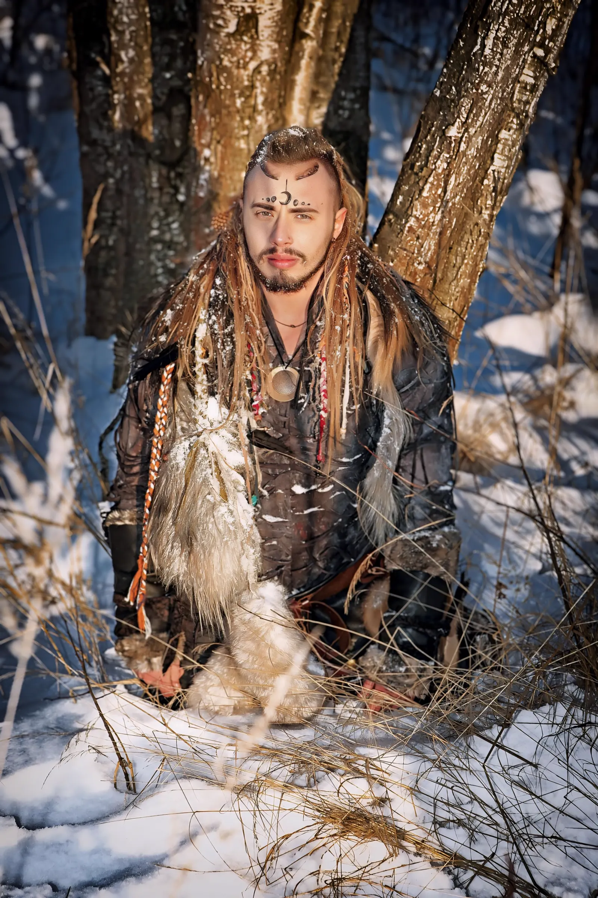
Момент, когда рушится всё. Предательство близкого друга и партнера оставило с долгами в 1.5 млн и разбитыми смыслами. Продажа всех активов, уход из соцсетей и тяжелая депрессия. Выходом стал тотальный побег — переезд в Китай. Год в другой культуре, изучение языка, модельные контракты и призовые места на международных турнирах стали духовным монастырем, где личность была собрана заново из осколков.
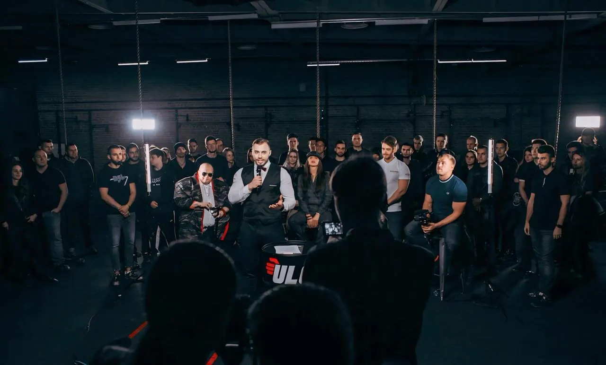
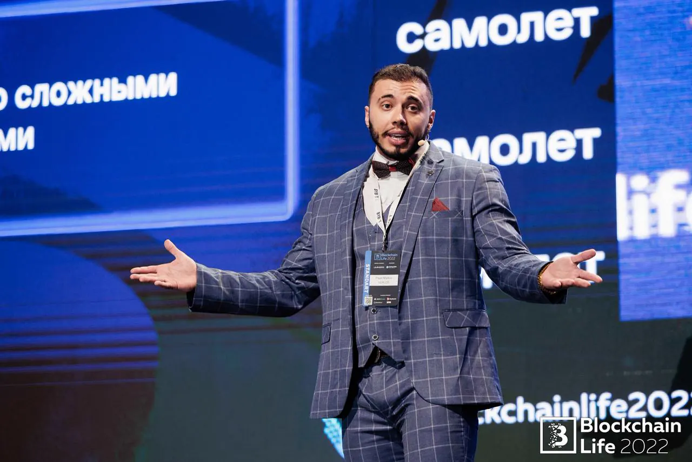
Возвращение в Россию с новым фундаментом. Запуск агентства BrandYouMade и погружение в психологию, продажи и маркетинг. От руководящих постов в недвижимости Сочи до выступления на BlockChain Life перед 12 000 человек. Это период синтеза: когда умение вести переговоры и управлять персоналом соединилось с глубоким пониманием человеческой природы и маркетинга.
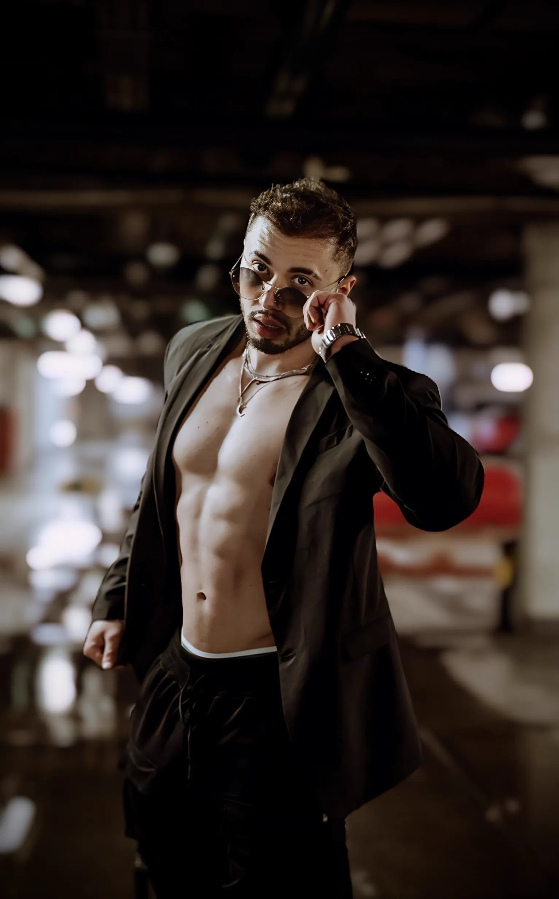
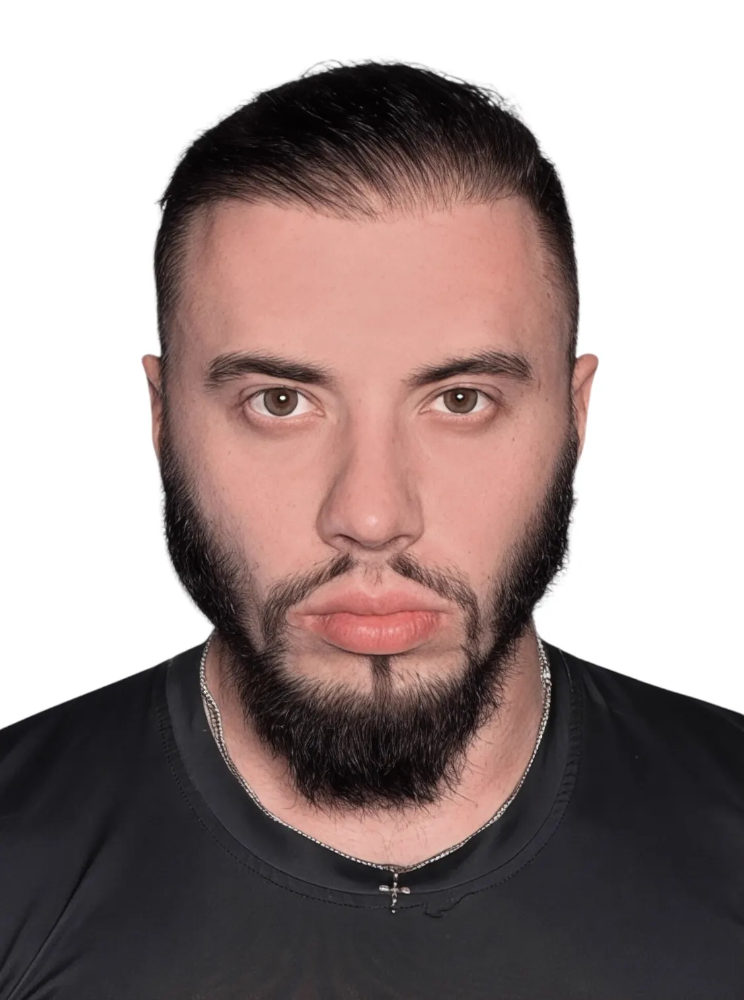
Пройдя через иллюзию комфорта, финансовые штормы и токсичные связи, я пришел к моменту истины. Опыт жизни стал финальным фрагментом пазла: я научился не просто смотреть, а видеть суть людей. Сегодня мой путь — это не погоня за атрибутами, а создание «Цифровых монументов» — наследия, которое останется после.
Я больше не строю бизнес — я строю экосистему осознанности. Мой статус Амбассадора и преданный шпиц рядом — это фундамент новой, честной реальности. Старое не стерто — оно переплавлено в золото высшей пробы.
Если визуальный образ — это фасад, то жизненные ценности — это несущие конструкции. Мой кодекс сформирован не теорией, а реальным путем.
Каждый новый человек — это «чистый лист» и потенциальный учитель. Не позволяйте теням прошлого опыта омрачать настоящее: прошлые разочарования не должны диктовать условия будущим союзам. Истинная мудрость заключается в способности извлекать ценность из каждого диалога.
Искренность — это кратчайший путь к цели. Говорите как есть, ведь правда экономит годы. На агрессию и конфликт отвечайте безупречной вежливостью: это не слабость, а высшая форма контроля, которая обезоруживает любого противника. Доброта сильного — осознанный выбор.
Ваша способность созидать не зависит от географии. Настоящий капитал находится внутри: это ваши навыки, которые вы возьмете с собой, даже если потеряете всё остальное. В любой точке мира вы выживете, потому что ваше мастерство всегда при вас.
Время — единственный актив, который нельзя реинвестировать. Либо вы управляете своим вниманием через жесткую структуру, либо мир управляет вами. Ваше умение созидать «с нуля» — это фундамент империи, не зависящей от внешних кризисов.
Это закрытое объединение для тех, кто разделяет мои ценности. Мы растем индивидуально, но используем общие ресурсы, чтобы путь к цели был короче.
Доступ к проверенным инструментам, скидкам на услуги партнеров и закрытым мероприятиям команды.
Прямой доступ к общим знаниям и опыту. Обучение, которое дает результат без лишних движений.
Правильное окружение и нетворкинг. Здесь ваши идеи находят поддержку и реальное воплощение.
«Мы не просто меняем тела — мы пересобираем личности»
Заполните короткую заявку.
Если вы уже узнали себя — не ждите идеального понедельника. Оставьте вводные: я быстро увижу картину, выделю главный рычаг и покажу, с чего начать именно сейчас.
Отметьте цель и главный стопор — я получу контекст, а вы сразу перейдёте от размышлений к первому действию.
Нет. Я смотрю на тело, питание, режим, восстановление, дисциплину и ограничения — иначе форма быстро упирается в быт.
Да. Разбор как раз нужен, чтобы увидеть старт и первые действия без перегруза.
Нет. Сначала можно пройти разбор и понять, какой формат имеет смысл именно под вашу задачу.
Тогда особенно важно собрать план под реальный график, а не под чужую идеальную жизнь.
Понимание ситуации, первые шаги, точки наблюдения и формат, с которого логично начать.
Ценность не в «совете на минуту». Ценность в том, что после контакта у человека появляется ясность: что происходит с телом, питанием, мышлением и режимом — и какие первые действия дадут результат без лишней суеты.
Минск • Сочи • Москва • СПб. Живой разбор, где сразу видно, что мешает форме: техника, питание, режим, дисциплина, ограничения и реальная точка А.
Для тех, кому нужен результат без привязки к городу: видеосвязь, контроль, персональное приложение, понятные задачи и корректировки под график.
Это не потоковая программа. Я смотрю на человека целиком: тело, питание, мышление, режим, ограничения, цель и то, что реально мешает держать систему.
После первого контакта человек уже ясно видит себя со стороны: где сейчас тело, питание, режим, дисциплина и мышление; что тормозит прогресс; какие первые шаги дают сдвиг; какой формат работы подходит именно ему. Вместо хаоса — понятный маршрут: что делать, что отслеживать, что корректировать и как довести форму до результата, который виден в теле и чувствуется внутри.
Ваш результат начинается с принятого решения.
Я жду тех, кто готов.